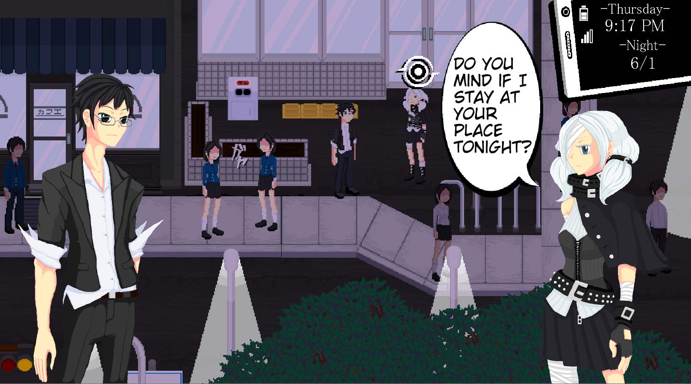

Rainfall

Overview
Rainfall is an Action RPG focused on the daily lives of characters within the town of Iriya, an isolated, artificial city.
The protagonist is a college drop-out living as a light novel writer on the 9th Floor of a high-rise apartment. His works are intentionally not good but are vastly popular and profitable, leading to his disillusionment with the industry. With his no-effort style of writing, the majority of his days are spent exploring the city, hanging out with people, or whatever else sparks his interest.
However, a subway ride leads him into a fractured Iriya where the Gods' creations converge onto themselves and a contract with one of these Gods disrupts his easy daily life he’s enjoyed up until now.
Gameplay
Taking place over the course of a year, the player makes decisions on how to spend the time in their day -- writing their novels, going to part-time jobs, hanging out with friends, and other activities. Many events raise social stats, which govern effectiveness in being able to perform activities and engage with people in the town. Rainfall uses an Active Social System, where social interaction and dialogue are updated from turn-based to real-time events. Rather than navigate a tree of choices, the game provides a set of tools and mechanics to intuitively navigate each conversation. Gathering rumors reveals new chat options, ignoring characters may change their reactions, and deciding where and when you shift your focus will affect how a scene plays out. With the Active Social System, it's not just what you say, but what you do that decides the outcome.
In addition to daily life, is dungeon exploration throughout the distorted version of Iriya. As the year progresses, different sections of the other world will open up and offer a variety of bosses and enemy encounters requiring the player to change how they build their character. The various rumors that the player collects throughout the game each have a variety of active and passive abilities that allow customized combat for different enemies.